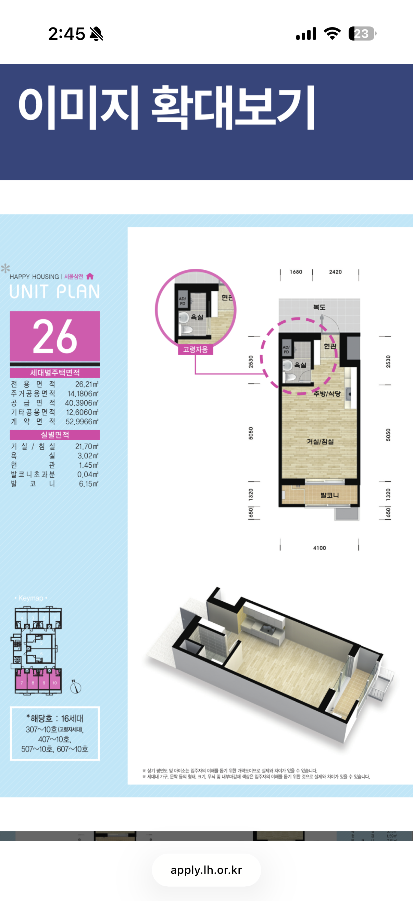

둘이 7평에서 어케 살라는거임

둘이 7평에서 어케 살라는거임
최소 전용 49정도로는 하자
돈 많으면 저런데 말고 좋은데 사서 살면 되지 않나? ㅋㅋㅋ 뭔 불만이 그렇게 많지?
8천에 월30만원만 있는 신혼부부가 살겠지? ㅋㅋㅋㅋㅋㅋ
싫으면 안살면 되지
섹스만되면됬지
친구가 살긴하는데 둘이 살긴 딱이고, 애 생기면 좀 빠듯하다고하더라
어렸을 때 4인 가족이 9평에서 살았어서 저정도 2명이면 충분할거 같은데
배가 처 불렀네 삼전동의 구석따리는 니미 한남동의 구석따리라도 불만 갖겠네 ㅋㅋㅋㅋㅋㅋㅋㅋ 삼전동이 죠스로 보이냐?
저기에 20평 30평짜리 만들면 20년 살고 더 살게 해달라고 징징거리는 사태가 벌어질게 뻔한데 굳이 크고 살기 좋게 만들어줘야 하나 싶다
저평수에서 어떻게 사냐는 애들은 공산국가로 가는게 맞다. 국가가 집마련 해주는게 당연한 권리냐?
20년 임대아파트 사회실험을 한 결과를 보고도 좋은 집을 마련해줘야 하냐?
2룸 이하는 신혼 부부용으로 주지마라
서울 송파구면 강남4구인데
원룸 하나만 당첨되도 몇배로 뛸텐데?
뭘 얼마나 국가에서 더 해줘야돼?
10년쯤전에 서울에서 센서스 조사원 한 적이 있었는데 의외로 개인주택 개조한 하숙 단칸방에 사는 부부 많더라. 서울이라면 꽤 괜찮은 조건으로 보임.